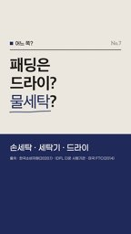
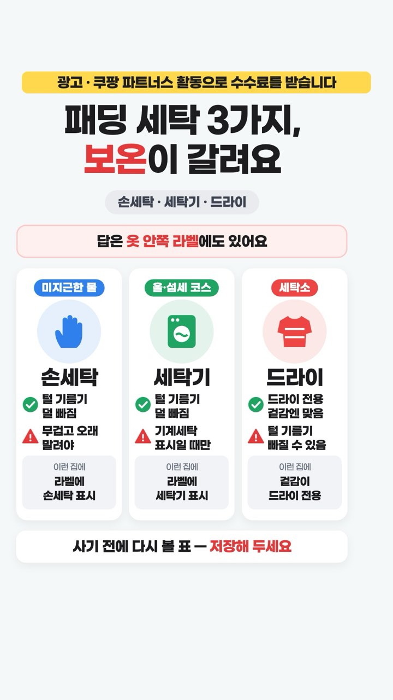

13번 영상
패딩은 드라이? 물세탁?
광고 이 게시물은 쿠팡 파트너스 활동의 일환으로, 이에 따른 일정액의 수수료를 제공받습니다.
영상에서 비교한 3가지예요. 누르면 쿠팡 검색 결과로 가요.
영상 속 비교표 바로 보기 ↓패딩 세탁 3가지, 보온이 갈려요
손세탁 · 세탁기 · 드라이
답은 옷 안쪽 라벨에도 있어요
- 손세탁 (미지근한 물)
- ✔ 털 기름기 덜 빠짐
- ⚠ 무겁고 오래 말려야
- 라벨에 손세탁 표시
- 세탁기 (울·섬세 코스)
- ✔ 털 기름기 덜 빠짐
- ⚠ 기계세탁 표시일 때만
- 라벨에 세탁기 표시
- 드라이 (세탁소)
- ✔ 드라이 전용 겉감엔 맞음
- ⚠ 털 기름기 빠질 수 있음
- 겉감이 드라이 전용
라벨부터 뒤집어 보세요
보온 · 라벨 · 말리기
| 손세탁 | 세탁기 | 드라이 | |
|---|---|---|---|
| 털 기름기 | ✔ 덜 빠짐 | ✔ 덜 빠짐 | ⚠ 빠질 수 있음 |
| 라벨 조건 | ✔ 손세탁 표시면 | ⚠ 기계세탁 표시만 | ⚠ 드라이 전용이면 |
| 말리기 | ⚠ 눕혀서 완전히 | ⚠ 건조기는 허용 표시만 | ✔ 세탁소에서 |
소비자원 롱패딩 10개 시험: 기계세탁 4개 · 손세탁 6개 출처: 한국소비자원(2020.1) · IDFL 다운 시험기관 · 미국 FTC(2014)
